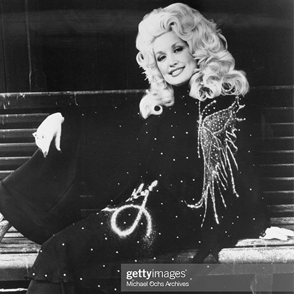

Dolly Rebecca Parton’s story begins on the 19th January 1946 at Locust Ridge,
which is positioned along the Great Smoky Mountains in Tennessee.
Dolly describes how her family was “dirt poor”, living in a small one room cabin with her eleven siblings.
As the Parton family grew in size, this brought responsibility to the older children.
This meant that they would have to look after their ‘baby’ especially at night.
When Dolly was nine years old, her ‘baby’ sadly passed away as a newborn.
Although the family endured a lot of heartache, Dolly started her career at the young age of ten,
by singing and playing guitar on Tennessee television/radio.
Her uncle Bill introduced her to a local TV show called Cas Walker Farm and Home Hour, where she was a regular guest.
After graduating from school, Dolly along with her suitcase and guitar headed for Nashville.
It was here that she met Porter Wagoner and partnered with him to star alongside him on The Porter Wagoner Show.
Dolly became a household name.